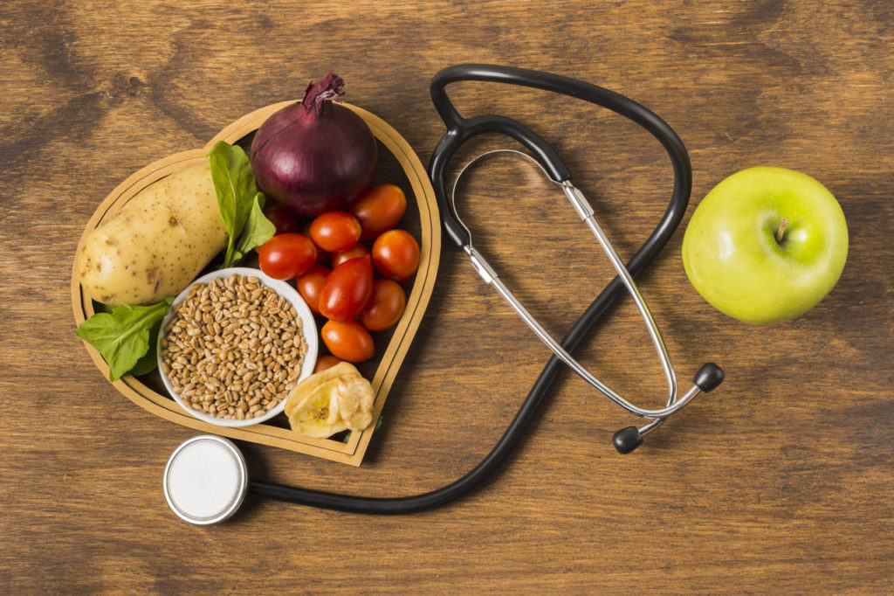

Quais os principais beneficios de uma Alimetação Saudável?
Uma alimentação saudável é essencial para o bem-estar geral. Ao fornecer ao corpo os nutrientes necessários, ela fortalece o sistema imunológico, previne doenças crônicas e contribui para a manutenção de um peso saudável.
Além disso, uma dieta equilibrada melhora o humor, aumenta a energia e promove a saúde mental. Pequenas mudanças nos hábitos alimentares podem gerar grandes benefícios a longo prazo, resultando em uma vida mais plena e ativa.
Principais beneficios
- Habitos Saudaveis.
- Melhor qualidade de sono.
- Mais Disposição e bem-estar.
- Prevenção de doenças.
- Alcance do peso ideal.